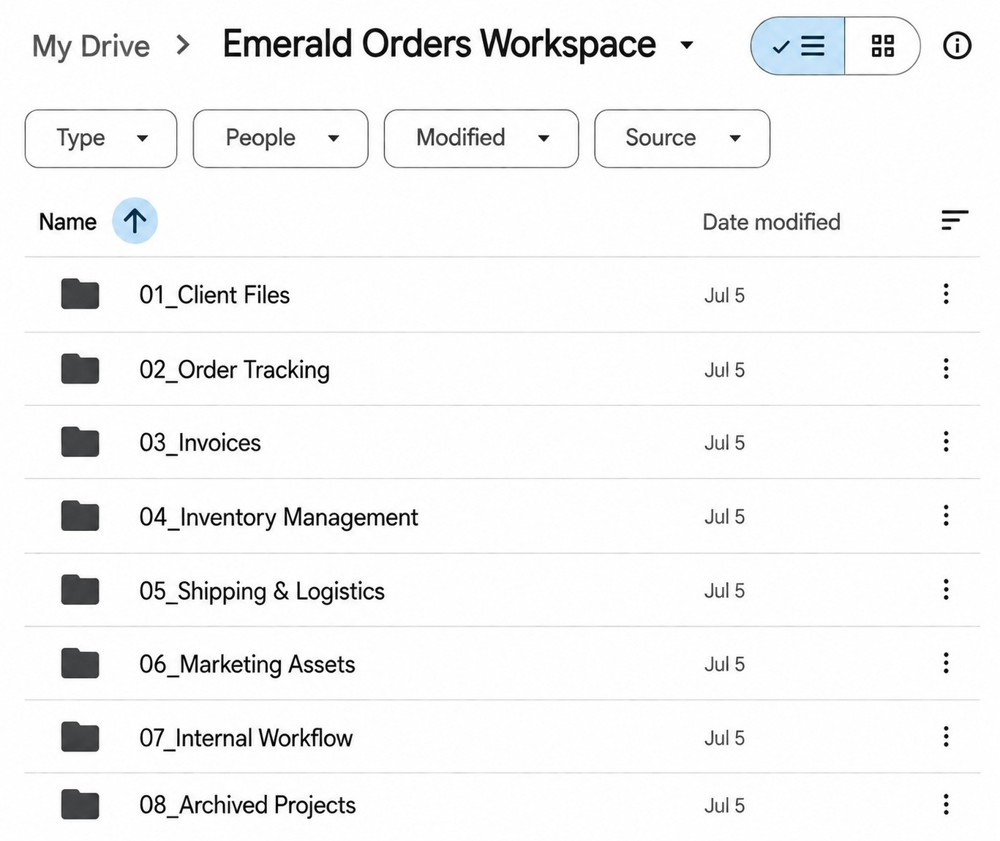
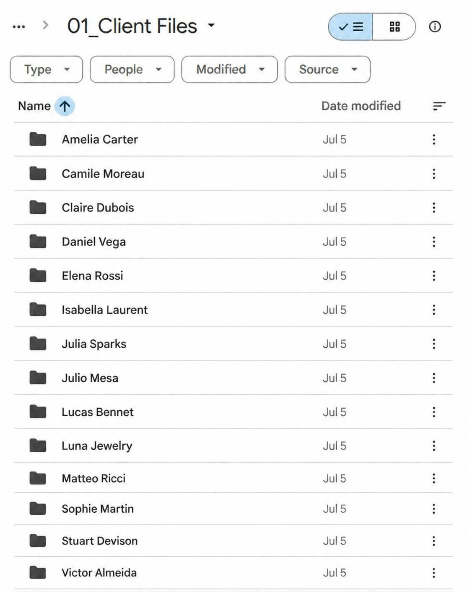
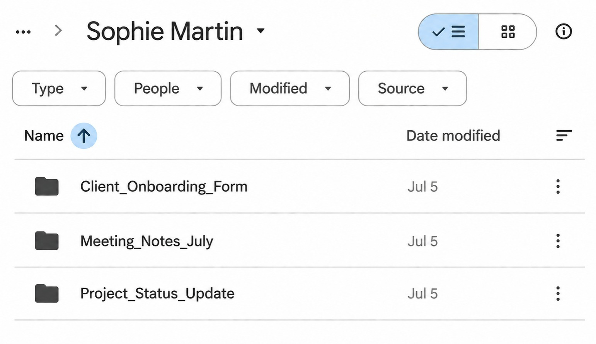
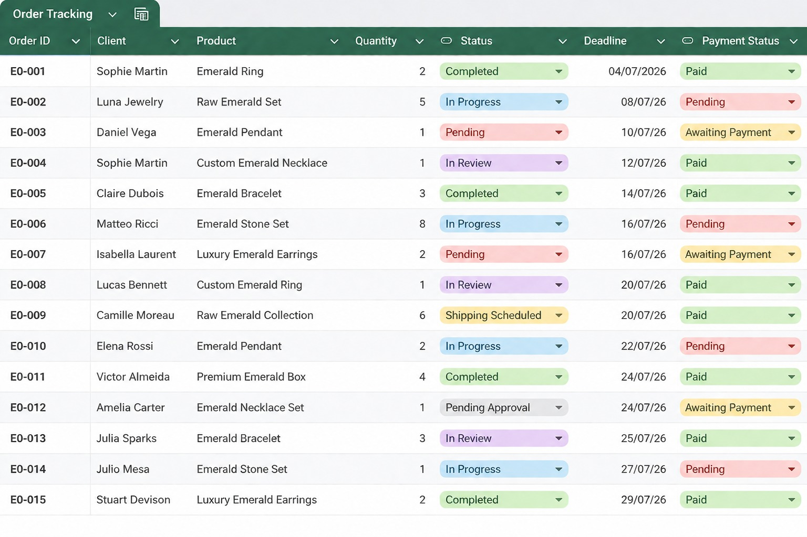
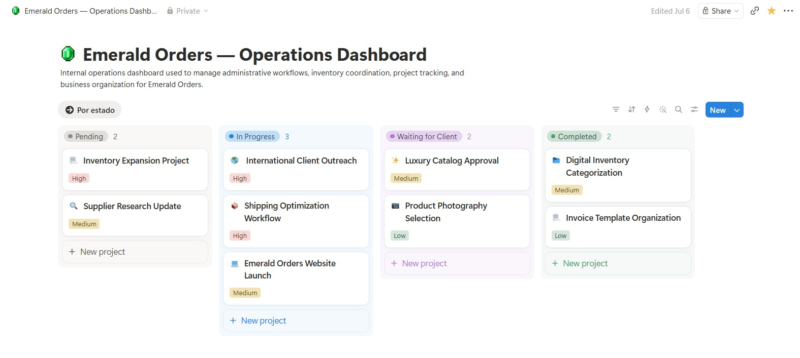
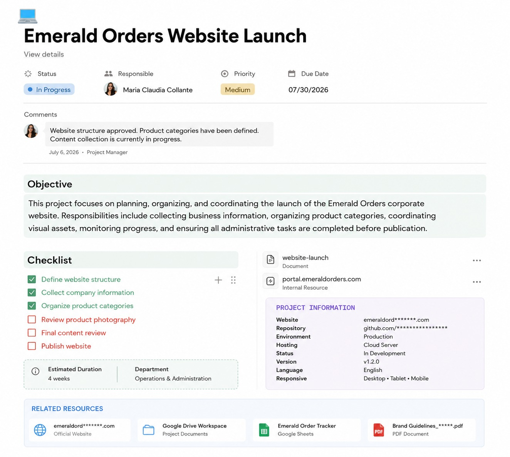

CASE STUDY 03
This case study demonstrates how I organize business documentation, manage operational data, and create structured digital workflows that improve efficiency and day-to-day administrative operations.
CHALLENGE
The objective of this project was to organize business documentation, operational information, and project files into a structured digital workspace that supports efficient administrative processes and easy access to information.
By integrating document management, data entry, and workflow coordination, the system provides a centralized environment that improves organization, productivity, and day-to-day business operations.
Virtual Assistant
Document Organization & Data Entry
Google Drive
Google Sheets
Notion
Structured Administrative Workspace
A structured digital workspace serves as the foundation for efficient document management. Files are organized into clear categories, improving accessibility, consistency and day-to-day administrative operations.

Client information is categorized into dedicated folders, ensuring that documents remain organized, easy to locate and properly maintained throughout the workflow.

Confidential files are securely organized and managed within a structured environment that promotes document control, accuracy and professional record keeping.

This spreadsheet centralizes customer orders, payment status, project deadlines and workflow progress, allowing administrative activities to be monitored from a single organized workspace.

Updated customer information, monitored project progress, tracked payment status, maintained accurate records and coordinated operational workflows.
Improved organization, visibility and administrative control throughout the order management process.
This operational dashboard centralizes administrative activities, project status and workflow progress, allowing ongoing operations to be monitored from a single organized workspace.

Monitored project activities, updated workflow information, coordinated administrative processes and maintained visibility across ongoing operations.
Increased workflow efficiency by providing a centralized overview of administrative activities and project progress.
This workspace integrates documentation, project organization and operational resources into a structured digital environment that supports efficient administrative coordination and workflow management.

Coordinated ongoing administrative activities by organizing project stages, assigning priorities and maintaining consistent workflow progression across multiple tasks.
Tracked project completion, monitored task updates and ensured operational visibility through structured progress management and regular follow-up.
Maintained organized records, updated project documentation and preserved accurate information to support efficient administrative operations.
Delivered a centralized administrative system that improved organization, project visibility, documentation control and overall workflow efficiency.
WORKFLOW
A structured administrative workflow designed to manage client requests, documentation, operational coordination, order processing, and project completion through an organized digital system.
Review client requirements and project requests.
Organize documentation and prepare project records.
Track orders, deadlines, and payment status.
Coordinate tasks and monitor project progress.
Update records and maintain workflow visibility.
Finalize documentation and archive project records.
PROJECT OUTCOME
This case study demonstrates my ability to organize digital workspaces, manage business documentation, coordinate operational workflows, and maintain structured administrative systems. By integrating Google Drive, Google Sheets, and Notion, I created an organized workflow that improves efficiency, document accessibility, and project visibility across daily business operations.
Digital document organization
Administrative workflow coordination
Data entry & order tracking
Project documentation management
Operational record organization
CASE OVERVIEW
Luxury Emerald Trading
Virtual Assistant
Google Drive • Google Sheets • Notion
Documentation → Data Entry → Workflow → Project Management
Completed
This case study demonstrates a complete administrative workflow, showcasing my ability to organize business documentation, manage operational data, coordinate ongoing projects, and maintain structured digital systems that support efficient day-to-day business operations.